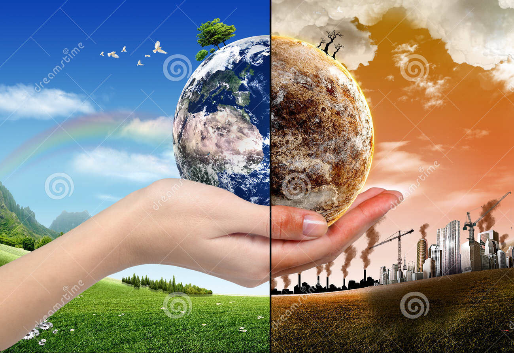

Pollution occurs when the environment becomes contaminated. The contamination can be from any solid, liquid,
or gas substance or by any form of energy, such as heat, sound, or radioactivity. If the contamination happens faster than it
can be dispersed, diluted, decomposed, recycled, or stored in some harmless form, pollution exists. For a full discussion of the
topic of pollution in general, see environmental pollution. For information on particular types of pollution, seeair pollution and
water pollution. For the study of the loss of Earth's biological diversity and the ways pollution can impact this loss, see conservation.